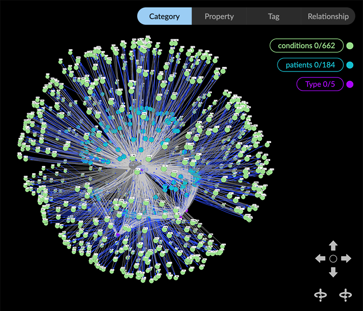
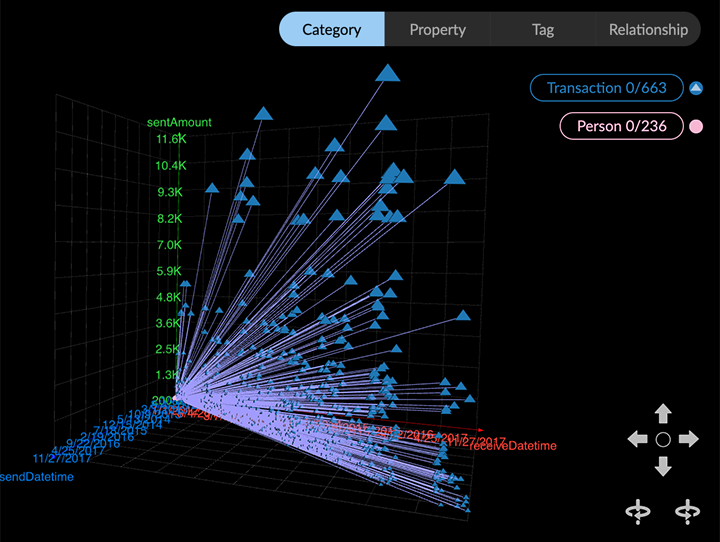
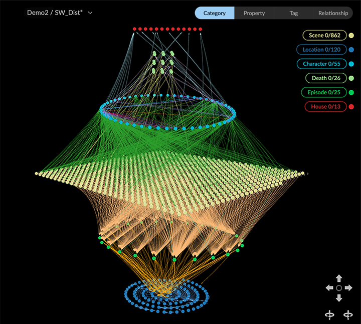
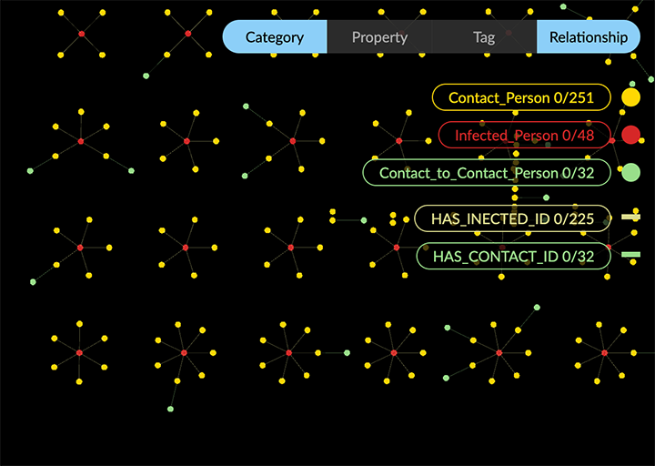
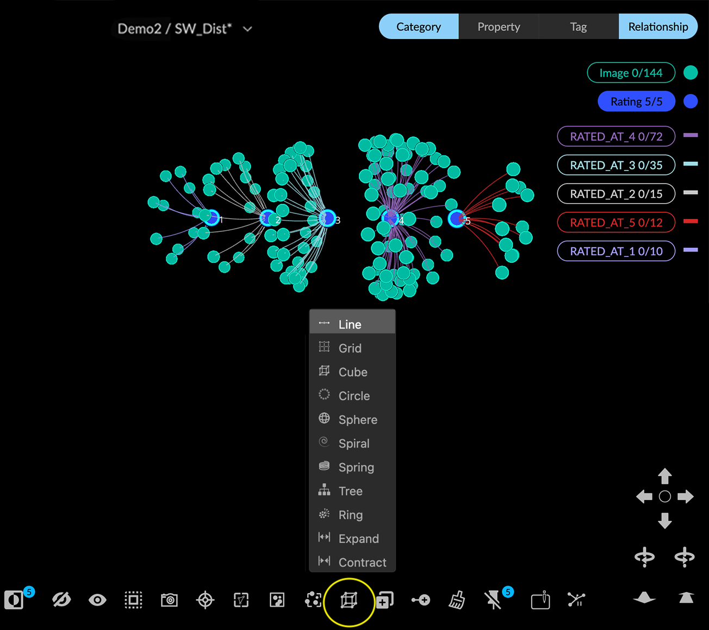
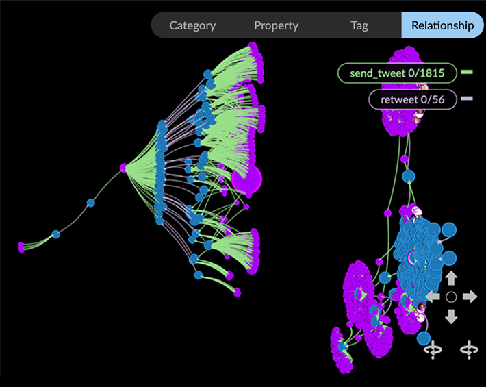
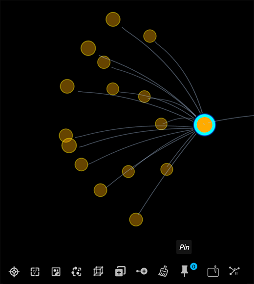
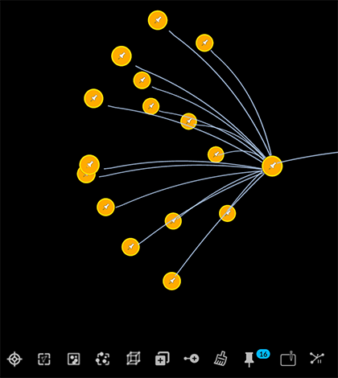
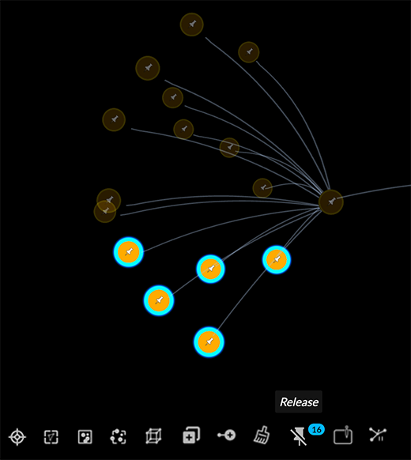

Working with Layouts GraphXR provides a wide variety of flexible layout options for displaying data in the project space. By enabling you to select, organize and separate data in the graph space, layouts make it possible to create and share information-rich visualizations of high-dimensional data. Options include sorting by property value, positioning and setting orientation along X- Y- and Z- axes, and much more. Layouts (and the geospatial mapping provided in the Map panel) rely on the ability to fix, or Pin nodes in 3D space in various specific ways, and to Release the pinned nodes when desired. The Layout Panel Tabs in the Layout panel let you arrange data in the project space in a variety of Force directed, Parametric, Geometric, or hierarchical Tree layouts. Force Layout The default force-directed layout renders nodes and edges in the graph space using a physics simulation that attempts to keep individual nodes and edges close enough, while reducing the number of crossing lines or hidden entities. You can adjust simulation parameters including link strength and distance, gravity, collision, and more.  Parametric Layouts Create scatter plots of nodes based on property values which are saved along with a saved view.  Geometric Layouts Arrange any selected group of nodes in a Line, Grid, Circle, Spiral, Cube, or Spring layout. The nodes involved can be ordered by property value and the layout can be scaled, placed, and rotated along X-, Y-, or Z- axes in the project space.  You can also apply Ring or Tree layouts around selected central nodes, and specify the depth of the hierarchy and the relative edge length.  One-click geometric layouts are available through the Quick Layout menu in the toolbar and the right-click context menu. You can apply geometric layouts (Line, Grid, Circle, Spiral, Cube, Spring, Ego Tree, or Ring) to any selection of nodes in one click, and to Expand or Contract the layout in pre-set increments. These easy layouts provide rapid visualization, and are especially useful when you don’t immediately need to order or distribute nodes by property value, or fine-tune the 3D orientation of your layout.  Tree Layout This layout automatically arranges nodes in a hierarchical tree structure that you can modify on the fly.  Pinning or Releasing Nodes Pinning locks a nodes to its current position in the 3D project space. GraphXR automatically pins nodes when you: Move one or more selected nodes to a new position. Apply a Geometric layout. The nodes become pinned to their new layout position. Drop nodes with geospatial coordinates on a Map. The nodes are pinned according to their latitude/longitude coordinates and the map perspective you choose. Nodes are released (or un-pinned) when you: Select pinned nodes and click Release in the right-click menu or toolbar. Select Hide Map, which releases the nodes pinned to locations on the world map, except for any nodes previously pinned before being dropped on the map. A Pin icon appears on all pinned nodes. These icons can obscure other node display options such as icons or images, and you will usually want to hide them using the Hide Pin Icon checkbox in Project>Settings. To pin and release one or more nodes: Select one or more nodes and select Pin on the right-click menu or toolbar.  The selected nodes will be pinned (in addition to any already pinned nodes).  To release, select one or more pinned nodes. The Pin* icon changes to *Release.  Click the Release icon to release the selected pinned nodes and return them to a default Force layout.